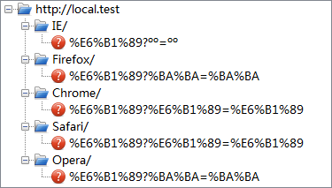
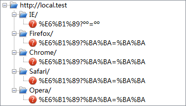
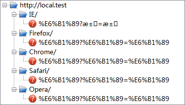
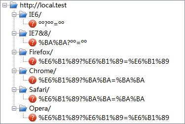
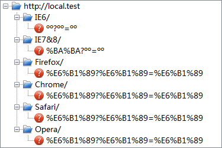

URI 的组成如下所示：
foo://example.com:8042/over/there?name=ferret#nose \_/ \______________/\_________/ \_________/ \__/ | |
| | | scheme authority path query fragment | _____________________|__ / \ / \
urn:example:animal:ferret:nose
根据 HTML 4.01 规范中的描述，URI 中不应该包含非 ASCII 字符。如以下 href 属性的值是不合法的：
<A href="http://foo.org/Håkon">...</A>
规范中建议，用户端在这种情况下应采取以下方式处理非 ASCII 字符：
关于 URI 类型及 URI 属性值中的非 ASCII 字符（Non-ASCII characters in URI attribute values）的详细信息，请参考 HTML4.01 规范 6.4 URIs 及 附录B.2.1 中的内容。
关于“百分号编码”的详细信息，请参考 RFC-3986 2.1. Percent-Encoding 中的内容。
关于 URI 组成的更多信息，请参考 RFC-3986 3. Syntax Components 中的内容。
对于 URI 中非 ASCII 字符，并非所有浏览器都是按照 HTML 4.01 规范中的建议实现的，而且不同浏览器在处理不同形式的 URI 时，表现也有差异。
这个问题将导致在服务端或客户端通过代码获取 URI 中的非 ASCII 字符信息时无法分辨编码信息，并产生乱码。
| 所有浏览器 |
|---|
下面测试各种情况下各浏览器对于 URI 中非 ASCII 字符的编码方式。
在应用中经常使用的编码是 GB2312 和 UTF-8，一个汉字在 GB2312 编码下占 2 个字节，在 UTF-8 编码下占 3 个字节，因此通过对比这两种编码更容易看出区别。下面的例子中将分别使用这两种编码测试。
http://local.test/BrowserName/汉?汉=汉1
<meta http-equiv="Content-Type" content="text/html; charset=gb2312"/>
<meta http-equiv="Content-Type" content="text/html; charset=utf-8"/>
注：
1. 此处的“汉”字，在不同测试中，实际的编码也不相同。
在各浏览器的地址栏中，直接输入“http://local.test/BrowserName/汉?汉=汉”，结果如下：1

可见，对于 URI 中的非 ASCII 字符：
注：
1. 因各浏览器的地址栏使用的编码未能确定，本测试仅强调 URI 中 非 ASCII 字符最终使用的字符集。
在不同的编码下，测试以下两段代码：
<button
onclick="location.href='http://local.test/BrowserName/汉?汉=汉';">go</button><a href="http://local.test/BrowserName/汉?汉=汉">go</a>
点击按钮或链接后，各浏览器实际发送的 URI 如下：
| GB2312 |  |
|---|---|
| UTF-8 |  |
可见，对于 URI 中的非 ASCII 字符：
在不同的编码下，测试以下代码：
<script> function go(){ var xhr=window.XMLHttpRequest?new XMLHttpRequest():new
ActiveXObject("Microsoft.XMLHTTP");1
xhr.open("get","http://local.test/BrowserName/汉?汉=汉",true);2 xhr.send(null); }
</script> <button onclick="go();">go</button>
点击按钮后，各浏览器实际发送的 URI 如下：
| GB2312 |  |
|---|---|
| UTF-8 |  |
可见：
注：
1. 这段代码仅为测试编码用，因此并未设置 Ajax 请求的回调函数及后续处理，并且对于 IE7 IE8，使用 XMLHttpRequest 创建的 xhr 对象和使用 ActiveXObject 创建的 xhr
对象的测试结果没有区别。
2. 假设这段代码所在域为 local.test，即不会有跨域的问题。
根据以上的测试，总结各浏览器对 URI 中非 ASCII 字符的处理的差异如下：
| 浏览器 | path 部分 | query 部分 | ||
|---|---|---|---|---|
| 使用 UTF-8 | 百分比编码 | 使用 UTF-8 | 百分比编码 | |
| IE | 是 | 是 | 否 | 否 |
| Firefox Opera | 是 | 是 | 否 | 是 |
| Chrome Safari | 是 | 是 | 是 | 是 |
| 浏览器 | path 部分 | query 部分 | ||
|---|---|---|---|---|
| 转换为 UTF-8 | 百分比编码 | 转换为 UTF-8 | 百分比编码 | |
| IE | 是 | 是 | 否使用页面编码 | 否 |
| Firefox Chrome Safari Opera | 是 | 是 | 否使用页面编码 | 是 |
| 浏览器 | path 部分 | query 部分 | ||
|---|---|---|---|---|
| 使用 UTF-8 | 百分比编码 | 使用 UTF-8 | 百分比编码 | |
| IE6 | 否无视页面编码使用 GB2312 | 否 | 否无视页面编码使用 GB2312 | 否 |
| IE7 IE8 | 否无视页面编码使用 GB2312 | 是 | 否无视页面编码使用 GB2312 | 否 |
| Firefox Opera | 是 | 是 | 是 | 是 |
| Chrome Safari | 是 | 是 | 否使用页面编码 | 是 |
当 URI 中含有非 ASCII 字符时，不要依赖浏览器对 URI 的编码方式，以避免产生差异。建议：
xhrObject.setRequestHeader("Content-Type","application/x-www-form-urlencoded")。或者仍使用 get
方法，但在发送前使用 encodeURI 或 encodeURIComponent 方法编码。var queryString = decodeURI(uriString or queryString);
request.setCharacterEncoding("UTF-8"); String queryString =
request.getParameter(queryName);| 操作系统版本: | Windows 7 Ultimate build 7600 |
|---|---|
| 浏览器版本: |
IE6
IE7 IE8 Firefox 3.6.8 Chrome 6.0.495.0 dev Safari 5.0(7533.16) Opera 10.60 |
| 测试页面: | 无 |
| 本文更新时间: | 2010-08-20 |
URI URL ASCII 地址栏 中文 乱码 escape unescape encodeURI decodeURI